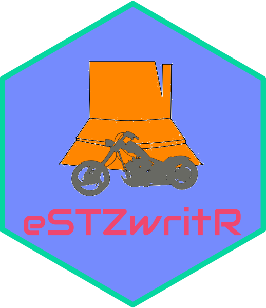

An R package for applying standardized file naming, directory structure, mapping, for empirical Seed Transfer Zones (eSTZs) in the United States.
Overview
The goal of this package is to standardize eSTZ documentation to streamline the sharing of these resources among natural resource professionals, and for researchers to be able to collectively utilize the products.
Installation
eSTZwritR is available only on github, with no plans for submission to CRAN. It can be installed using remotes or devtools (or pak etc.) like so:
install.packages('devtools')
devtools::install_github('sagesteppe/eSTZwritR')It relies on sf which on occasion can be difficult to install. If you have install problems (read them…), but sf is a likely culprit as it requires several external binaries and libraries.
Once installed it can be attached for use like any other package from github or CRAN
Usage
eSTZwritR requires only five user-facing functions to implement all data sharing conventions.
| Function | Purpose | Output |
|---|---|---|
regionCoding |
determine DOI Regions | Character string for file naming |
dirmakR |
create Directory | Directory, spatial data |
mapmakR |
create Map | PDF or png map (for publications) |
fieldsmakR |
ensure fields (columns) are named | sf object to local location |
orderZones |
ordering seed zone numbers | updated vector data, plot, summary |
Documentation
A paper describing the impetus behind the creation of eSTZwritR, and broadly outlining it’s functionality is available here.
A poster on the project for the National Native Seed Conference 2025 is below. It contains all of the proposed conventions, it is also located in the ./man/figures subdirectory, where you can download a high resolution copy and zoom in on it.
A vignette showcasing the usage of the package is available here. This vignette includes the images in the ‘Suggestions’ portion of the above poster in the relevant areas so you can get a better idea of specific suggestions (most of which are not included in the text portions of the manuscript.)
Citation
Wieferich, B., Benkendorf, R.C. 2024. eSTZwritR
A bibtex entry for latex users is:
@Misc{wieferich2024estz,
title = {eSTZwritR},
author = {Wieferich, B and Benkendorf R.C.},
year = {2024},
url = {https://github.com/sagesteppe/eSTZwritR},
doi = {10.5281/zenodo.14641975} }
Or use R to display citations:
citation('eSTZwritR')For complete citation information, see the citation page.